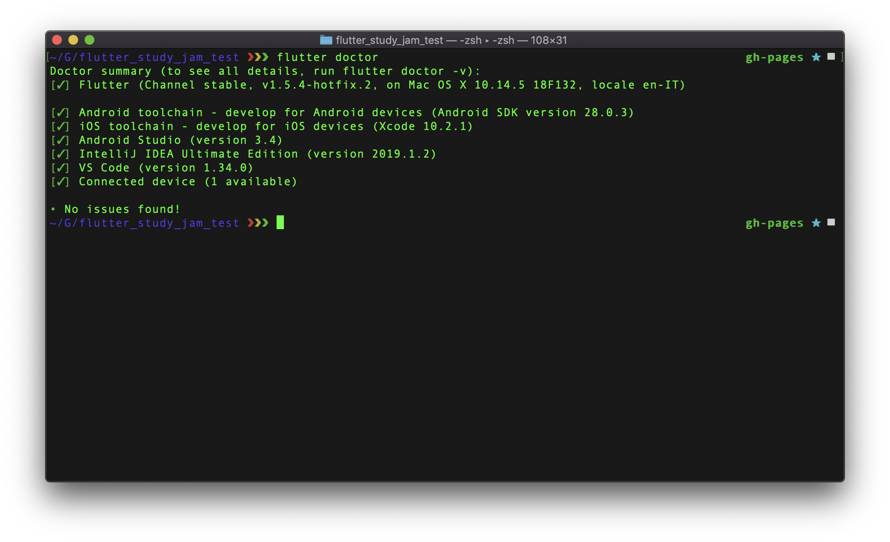
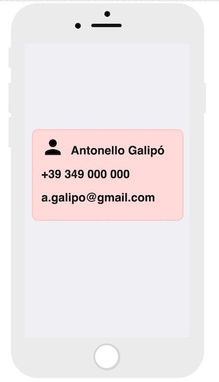
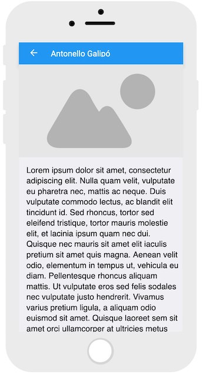

Flutter è il nuovo framework made in Google per la realizzazione di UI in maniera semplice e veloce.
Il linguaggio di programmazione è Dart, anch'esso di casa Google.
Il framework permette di generare interfacce grafiche pixel-perfect via codice, con tutti i vantaggi che ne possono conseguire. Possiamo infatti sfruttare le proprietà dei linguaggi di programmazione a oggetti per realizzare delle UI robuste e pulite velocemente ed in maniera semplice.
Tra le qualità di Flutter spiccano:
Questa tecnologia sta subendo una forte crescita ed è utilizzata da un numero di aziende e sviluppatori indipendenti sempre crescente (basti vedere lo showcase).
Basta parlare, ora è il momento di mettersi a lavoro!
Prima di iniziare sono necessarie due cose, installare Flutter sul proprio computer e configurare un editor per utilizzarlo con Flutter.
Una volta fatto ciò saremo in grado di scrivere applicazioni in Flutter e di eseguire su:
Una volta terminata la configurazione, l'output di flutter doctor dovrebbe essere simile a questo:

A seconda dell'editor scelto, crea un nuovo progetto Flutter seguendo le istruzioni a questo link.
Chiama l'applicazione BIVI, nome "originale" che sta per Biglietto da visita!
Una volta creato il progetto, lancialo su un emulatore o un device fisico per assicurarti del corretto funzionamento dell'installazione di Flutter. Segui gli altri step delle istruzioni in modo da provare l'hot reload e da acquisire familiarità con l'ambiente.
Cancella tutto il codice contenuto in lib/main.dart ed incolla il seguente:
import 'package:flutter/material.dart';
void main() => runApp(MyApp());
class MyApp extends StatelessWidget {
@override
Widget build(BuildContext context) {
return MaterialApp(
title: 'Flutter Demo',
theme: ThemeData(
primarySwatch: Colors.blue,
),
home: HomePage(),
);
}
}
class HomePage extends StatelessWidget {
@override
Widget build(BuildContext context) {
return Scaffold(
appBar: AppBar(
title: Text("BIVI!"),
),
body: Center(
child: Text("Placeholder"),
),
);
}
}
In questa sezione creerai la pagina contenente la prima parte del biglietto da visita.
Utilizza i widget Card, Container, Center, Padding, Row, Column, Icon e Text per realizzare un layout simile a quello in figura.
Ricorda:
color, width ed height di ContainerCard è dettata dal Container che la contieneMainAxisAlignment e CrossAxisAlignmenr di Row e Columnstyle di Textcolor e size di Icon
InkWell è uno dei widget piú comuni per rendere interattivo un wigdet.
Inserendo un widget come child di un InkWell, sarà infatti possibile specificare le azioni da compiere a fronte di un tap, doppio tap, long press, etc.
Le azioni da compiere a fronte di un evento di tocco sono descritte da funzioni di eseguire, che possono essere fornite al widget in uno dei seguenti modi:
InkWell(
onTap: () {
print("tapped!");
},
onDoubleTap: () {
print("double tapped!");
},
child: //Widget da rendere tappabile,
),
La navigazione in Flutter puó essere vista come una pila di schermate (widget) della quale lo schermo visualizza la cima.
Ogni volta che navighiamo su una nuova schermata, la aggiungiamo alla cima della pila. Ogni volta che torniamo indietro, rimuoviamo dalla cima della pila la schermata che stiamo visualizzando in quel momento.
La navigazione è gestita da un componente specializzato chiamato Navigator.
Per navigare su una nuova schermata, un esempio di come effettuare il push di essa nello stack (pila) di navigazione in questo modo:
Navigator.of(context)
.push(MaterialPageRoute(
builder:(context){
return NewPage(); //la nuova pagina da pushare sulla navigazione
},
),
);
Il codice riportato ottiene un riferimento all'istanza di Navigator
relativa al contesto attuale, e richiede il push di una nuova pagina,
costruita mediante il builder messo a disposizione dalla classe MaterialPageRoute.
È possibile combinare InkWell e le azioni col Navigator per aggiungere interattività
e navigare su una seconda schermata, che al momento sarà vuota.
Per fare ciò:
main.dart il seguenteclass MyBiography extends StatelessWidget {
@override
Widget build(BuildContext context) {
return Scaffold(
appBar: AppBar(
title: Text("Antonello Galipò"),
centerTitle: true,
),
body: Container(
color: Colors.red,
),
);
}
}
InkWell ed usando Navigator in questo modo:Navigator.of(context)
.push(MaterialPageRoute(
builder:(context){
return MyBiography();
}),
);
In Flutter le immagini possono essere mostrate in diversi modi:
Image.asset(path)Image.file(file)Image.memory(buffer)Image.network(url)La seconda pagina dell'app dovrà mostrare un'immagine recuperata da internet
ed una piccola descrizione.
Un esempio di immagine caricata da internet è il seguente:
Image.network(
"https://bit.ly/2Z08SbL"
);
Modifica il widget MyBiography includendo un'immagine dalla rete ed un testo in basso.

Se sei arrivato fin qui significa che hai finito tutto in tempo, grande!
Sentiti libero di sperimentare con altri widget dal catalogo di Flutter e di chiedere al team eventuali dubbi o idee su misura per te!